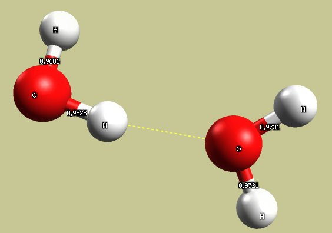

Water#
Investigate the geometry of water and hydrogen bonding between molecules.
Task#
Create a water molecule and optimize its geometry. Use the measurement tool to check the bond lengths and angle.
Add another water molecule and use the same force field to optimize the geometry of the resulting dimer. Check the bond lengths in both molecules, and the angles between the bonds. Check how the molecules are oriented to each other. Calculate the energy of interaction, pay attention to the role of hydrogen bonds. Measure the deformation of bonds.
Solution#
Force field |
Bond length (Å) |
Angle (°) |
|---|---|---|
GAFF |
1.10 |
102.8 |
Ghemical |
0.95 |
109.5 |
MMFF94 |
0.97 |
104.0 |
UFF |
0.96 |
104.5 |
Wikipedia gives an experimental O-H bond length of 95.84 pm, and a H-O-H bond angle of 104.45°, so both MMFF94 and UFF perform reasonably.

Note that there is a significant electrostatic interaction between the positively charged hydrogen atom and the oxygen on neighboring molecules.

Warning
Only the MMFF94 force field includes hydrogen bonding terms, so two water molecules may not attract each other using the other force fields.